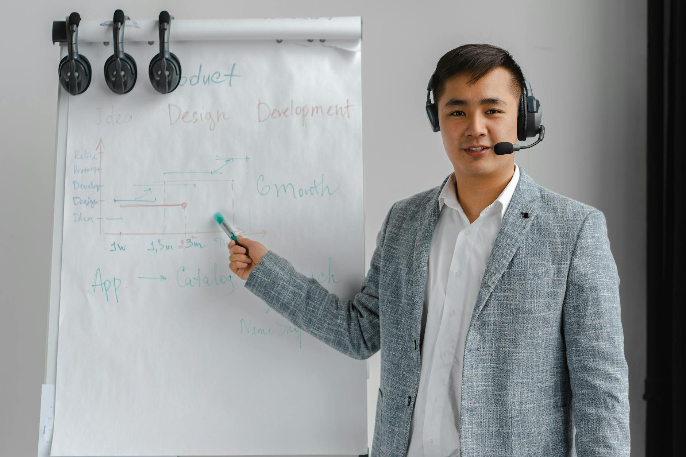

Client Testimonial
"Since deploying ExpertTech's agentic workflows, our agents can focus on solving problems, not searching for data." – VP of Support Operations

A telecom provider used agentic workflows to triage support tickets. Agents coordinate autonomously to classify issues, retrieve account data and escalate when needed, improving service levels and reducing call transfers.
The client is a rapidly growing mobile carrier with millions of subscribers. Their contact center fields tens of thousands of calls every day, so even a small gain in efficiency translates into significant savings. Traditional call routing could not keep up with the scale or complexity of requests.
High ticket volume made manual triage slow and error-prone. Agents needed to dig through multiple systems to verify identity and account details. Customers were bounced between departments, leading to poor satisfaction scores. The carrier sought an AI-driven approach that could automate categorization and ensure that live agents received complete context when needed.
We deployed a multi-agent workflow to classify requests, pull account information and escalate critical issues automatically. The workflow relied on a combination of natural language understanding and rule-based routing. Each agent communicated through a central message bus, sharing metadata such as customer ID and conversation history. A dedicated escalation agent monitored sentiment and compliance triggers, connecting the caller to a specialist when required. The diagram below showcases the architecture and communication paths.
Call transfers dropped sharply and service levels improved. The system handled 60% of incoming tickets without human intervention, reducing average handle time by 2 minutes and saving an estimated $1M annually.
"Since deploying ExpertTech's agentic workflows, our agents can focus on solving problems, not searching for data." – VP of Support Operations